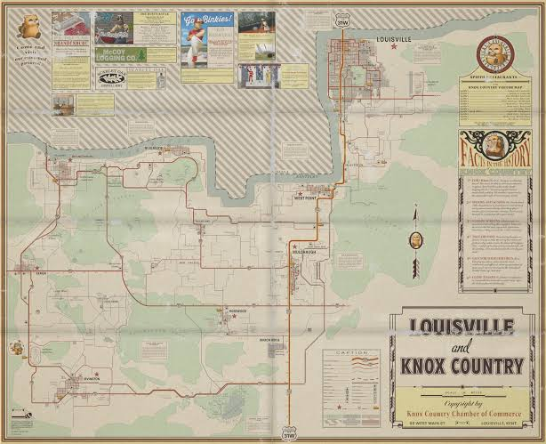
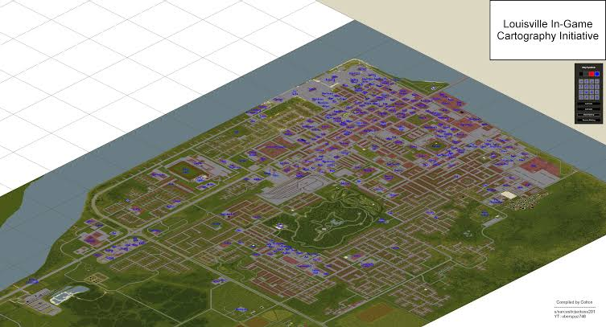
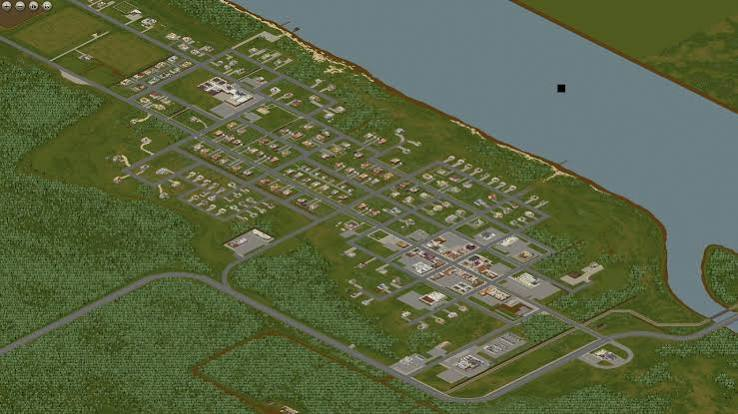
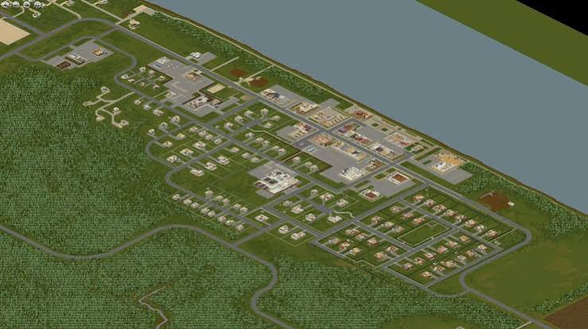

Início › Mapa
Mapa de Knox Country
Knox Country tem cinco cidades principais: Louisville, West Point, Riverside, Muldraugh e Rosewood. Cada uma tem seu próprio perfil de risco e de recursos, e escolher por onde começar muda a sua partida. Abaixo estão as vistas aéreas de cada cidade, com Louisville em destaque por ser a maior de todas. Clique em uma cidade para abrir o guia completo, com história, dificuldade, pontos de interesse e dicas de sobrevivência.
Sobre Knox Country

Em Project Zomboid, Knox Country (originalmente chamado de Knox County nas primeiras versões) é uma região fictícia no norte de Kentucky, inspirada na área real de Fort Knox e Louisville, onde o apocalipse zumbi, conhecido como Evento Knox, começa em 4 de julho de 1993.
Origens e causas especuladas
A origem exata da Infecção Knox nunca é confirmada oficialmente no jogo, mas várias pistas aparecem através dos rádios, televisões e cenários:
- Poluição e toxinas: semanas antes do surto, moradores relataram maus odores frequentes e altos níveis de toxinas no ar, no solo e na água da região.
- Segredos militares: a falta de fiscalização ambiental e rumores de experimentos militares com materiais perigosos cercam a área próxima à base secreta.
- Comida contaminada: algumas transmissões e teorias apontam para uma possível disseminação alimentar ligada aos restaurantes Spiffo's e a doenças prévias em rebanhos locais.
Linha do tempo do surto
Os primeiros casos de uma suposta "gripe extrema" surgem ao redor de Muldraugh e West Point, acompanhados pelo corte nas linhas telefônicas.
O exército dos EUA cria uma Zona de Exclusão, evacua os moradores próximos e impõe bloqueios militares sem dar explicações claras.
O modo de sobrevivência padrão do jogo começa três dias após a quarentena, deixando o jogador preso dentro do perímetro isolado.
O bloqueio militar ao sul de Louisville é rompido e o vírus revela transmissão pelo ar, infectando pessoas que nunca foram mordidas.
Os militares explodem as pontes sobre o rio Ohio na tentativa desesperada de conter o avanço, mas as transmissões saem do ar e a infecção se torna uma pandemia global.
Em foco: a maior cidade do jogo

Louisville
A maior cidade do jogo e o objetivo final de muitos sobreviventes. É gigantesca e cheia de recursos, mas tem uma altíssima concentração de zumbis.
Oferece ótimos locais para bases afastadas do centro, como as mansões ao norte.
Ver guia completo →As outras quatro cidades principais

West Point
Cidade de tamanho médio com construções muito próximas e aglomeradas. É extremamente populosa e perigosa, comparável a Louisville em densidade de zumbis, e por isso é a favorita dos jogadores mais experientes.
Ver guia completo →
Riverside
Considerada uma cidade mais calma, ideal para quem quer um começo mais tranquilo. Em compensação, tem um pouco menos de variedade direta de recursos, já que não conta com um corpo de bombeiros fixo.
Ver guia completo →
Muldraugh
Localizada ao longo de uma grande rodovia, é conhecida por sua movimentada avenida principal e por exigir cautela na hora de escolher onde montar acampamento.
Ver guia completo →
Rosewood
Muito procurada por iniciantes por ser menor, ter menos zumbis e contar com uma delegacia e um quartel de bombeiros bem próximos, o que facilita a coleta de ferramentas e machados.
Ver guia completo →